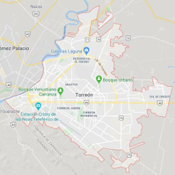

Torreón, Coahuila a 01 de junio de 2020.

IMPLAN avanza en la realización del Atlas de Riesgos de Torreón.
La Dirección de Planeación Urbana Sustentable, perteneciente al Instituto Municipal de Planeación y Competitividad de Torreón (IMPLAN) se encuentra trabajando en la consolidación del Atlas de Riesgos.
La incidencia de procesos que implican una condición de peligro y riesgo por fenómenos perturbadores se han incrementado a todo lo largo del país, lo cual es justificación suficientemente válida para efectuar estudios sobre peligro y riesgo. Esta zona por su localización geográfica, está expuesta a fenómenos de alta peligrosidad como son las zonas de subsidencia o hundimientos, como parte de la prevención de desastres.
El Atlas de Peligros y Riesgos es una herramienta que permitirá una vez concluido, identificar mediante el uso del Sistema de Información Geográfico y la clasificación de las bases de datos, la clasificación de los factores de peligro, exposición, vulnerabilidad y riesgo, a los que está expuesta la población y su patrimonio.
El Atlas de Riesgo tiene como fin aportar a la Prevención de Desastres, el Ordenamiento Territorial y al Desarrollo Urbano, los conocimientos de los fenómenos perturbadores que impactan a la población, fortaleciendo así la toma de decisiones y contribuyendo a la consolidación de los asentamientos humanos en zonas aptas, mejorando así la calidad de vida de la población.
Además, generar un Atlas Municipal de Riesgos de Torreón con lineamientos para diagnosticar, ponderar y detectar susceptibilidades, peligros, vulnerabilidades, estimar los riesgos o índices de exposición y las medidas de mitigación de estos en el espacio geográfico a través de criterios estandarizados, catálogos y bases de datos homologadas compatibles y complementarias con el Atlas Nacional de Riesgos que administra el Centro Nacional para la Prevención de Desastres.
Se invitó al proyecto a cinco consultoras en base a la experiencia que tienen en desarrollo urbano y gestión de riesgo. Los cinco invitados fueron CONURBA (Morelia, Michoacán), Servicios Geológicos Mexicanos (Pachuca, Hidalgo), Urbis Internacional (Monterrey, Nuevo León), Soluciones SIG (Naucalpan, Edo. De México) y Centro EURE (Ciudad de México). Sólo tres consultoras mostraron su interés registrando su empresa en el Registro de Proveedores del Municipio.
El pasado 06 de abril de este año, se procedió a convocar para participar en el presente procedimiento de Licitación de invitación a cuando menos tres personas, siendo los siguientes: Soluciones SIG S.A. de C.V., Urbis Internacional S.A. de C.V. y Centro EURE S.C.
La junta de aclaraciones se realizó el día 20 de abril del 2020 a las 11:00 horas en el IMPLAN. En conjunto con Contraloría se recibieron los escritos en tiempo, por parte de los licitantes, con un total de seis, ocho y nueve preguntas, a los cuales se les dio respuesta a todas y cada una de ellas.
La recepción y apertura se realizó el día 27 de abril del 2020 a las 11:00 horas en este Instituto. El IMPLAN y Contraloría registraron un número de dos participantes a la junta de presentación y se recibieron sus propuestas, no se presentó Centro EURE. Se procedió a la revisión de los documentos de la proposición para verificar el cumplimiento cuantitativo de los requisitos y documentos estipulados en las bases de licitación.
De acuerdo al proceso revisión cualitativa de las propuestas se determinó que Urbis Internacional S.A. DE C.V. queda descalificado al no cumplir con el mínimo de tres cartas de referencia para elaborar el Atlas Municipal de Riesgos de Torreón, Coahuila.
En fecha 21 de mayo del 2020, se llevó a cabo la segunda sesión ordinaria, mediante la cual el Comité de Adquisiciones del IMPLAN Torreón, Coahuila, fue informado sobre el fallo a favor de la empresa Soluciones SIG S.A. de C.V., por ser quien cumple con todos los requisitos de las bases de licitación y es económicamente solvente. El viernes 05 de junio se llevará a cabo en el IMPLAN Torreón una mesa de trabajo entre los consultores, el IMPLAN y Protección Civil, como parte de los trabajos de elaboración, los cuales concluirán en noviembre del presente año.